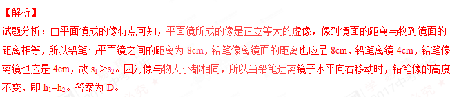
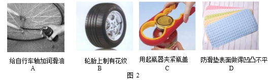
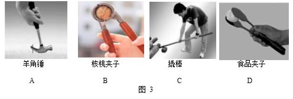
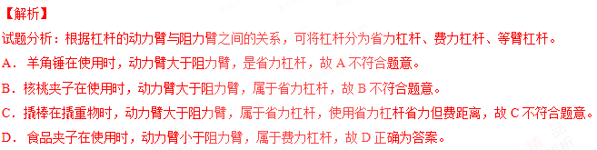

2017年北京市中考物理试题 · 选择题 第6、7、8、9、10题 · 对应解析
6．用大小不同的力先后敲击同一个音叉，比较音叉两次发出的声音，下列说法中正确的是
A．响度不同 B．音调不同 C．音色不同 D．频率不同
【答案】A
【解析】
试题分析：用大小不同的力先后两次敲击同一个音叉时，音叉振幅不同，发出声音的响度就不同，故A正确为答案，选项BCD错误。
考点：响度
7．水平桌面上竖直放置着平面镜和直立的铅笔，平面镜中呈现铅笔的虚像。当铅笔与平面镜之间的距离为8cm 时，像的高度为 h1，像到平面镜的距离为 s1；当铅笔与平面镜之间的距离为 4cm 时，像的高度为 h2，像到平面镜的距离为 s2。则下列四个选项中，判 断正确的是
A．s1=s2 B．s1<s2 C．h1>h2D．h1=h2
【答案】D

考点：平面镜成像的特点
8．图 2 所示的实例中，目的是为了减小摩擦的是

【答案】A
【解析】
试题分析：
A．给自行车轴加润滑油，是通过使接触面分离的方法来减小摩擦，故A符合题意为答案。
B．轮胎上制有花纹，是在压力一定时，增大接触面粗糙程度来增大摩擦力，故B不符合题意。
C．用起瓶器夹紧瓶盖，是通过增大压力来增大摩擦，故C不符合题意。
D．防滑垫表面做的凹凸不平，是在压力一定时，通过增大接触面的粗糙程度来增大摩擦力的，故D不符合题意。
考点：减小摩擦的方法
9．图  3 所示的工具中，在使用时属于费力杠杆的是
3 所示的工具中，在使用时属于费力杠杆的是

【答案】D

考点：杠杆的种类10．下列选项中符合安全用电要求的是
A．用湿手按已接电源的插座上的开关
B．及时更换家庭电路中绝缘皮老化、破损的导线
C．在未断开电源开关的情况下，用湿布擦拭电视机
D．把用电器的三脚插头改为两脚插头接在两孔插座上使用
【答案】B
【解析】
试题分析：
A．不纯净的水容易导电，用湿手按已接电源的插座上的开关，容易发生触电事故，故A不符合安全用电要求。
B．电线的绝缘皮老化、破损时应及时更换，否则容易发生触电事故，故B符合安全用电要求。
C．湿布是导体，在未断开电源开关的情况下，用湿布擦拭电视机容易发生触电事故，故C不符合安全用电要求。
D．把用电器的三脚插头改为两脚插头接在两孔插座上使用，这样当金属外壳漏电时，没有接地保护，容易引发触电事故，故D不符合安全用电要求。
考点：安全用电